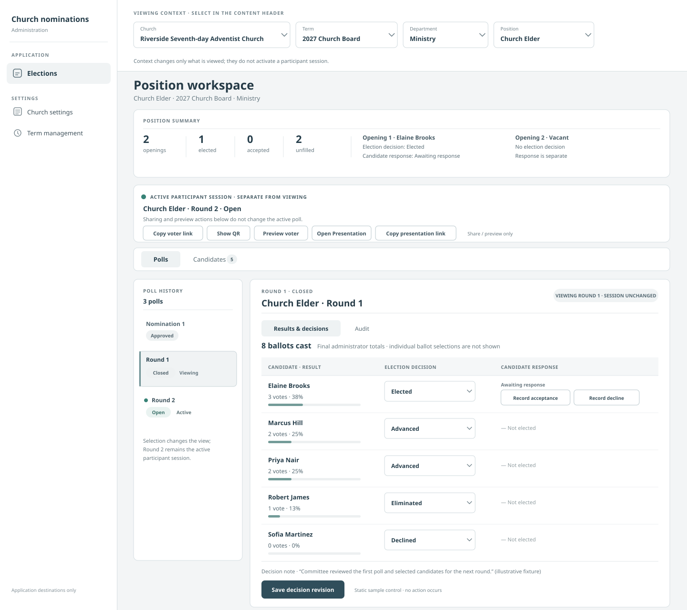
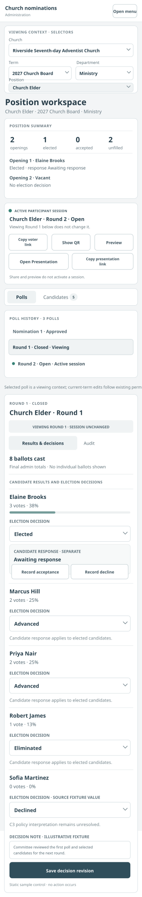
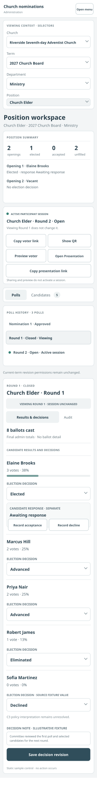
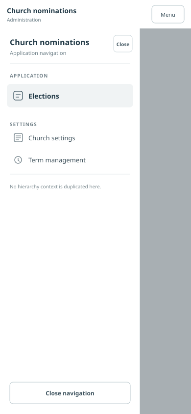

Desktop · 1440px
Full application navigation is separate from the Church → Term → Department → Position viewing-context selectors. The dense poll workspace uses the approved sample fixture.

Mobile · 390px
Normal vertical scrolling. Results and decision controls become labeled, stacked rows; the entire content list remains present.

Compact · 320px
Normal vertical scrolling with all four context selectors and full navigation labels; no page-level horizontal scroll is intended.

Mobile navigation open · supplemental state
Shows a labeled Sheet-style application menu only. Church/term/department/position context does not appear in the sidebar.

Scope boundary: “Elections” maps to the existing term workspace; “Settings” exposes only existing Church settings and Term management destinations. No Dashboard is shown because no approved Dashboard destination was found. All sample data is illustrative and static; no endpoint, feature, policy, workflow, or implementation is added.